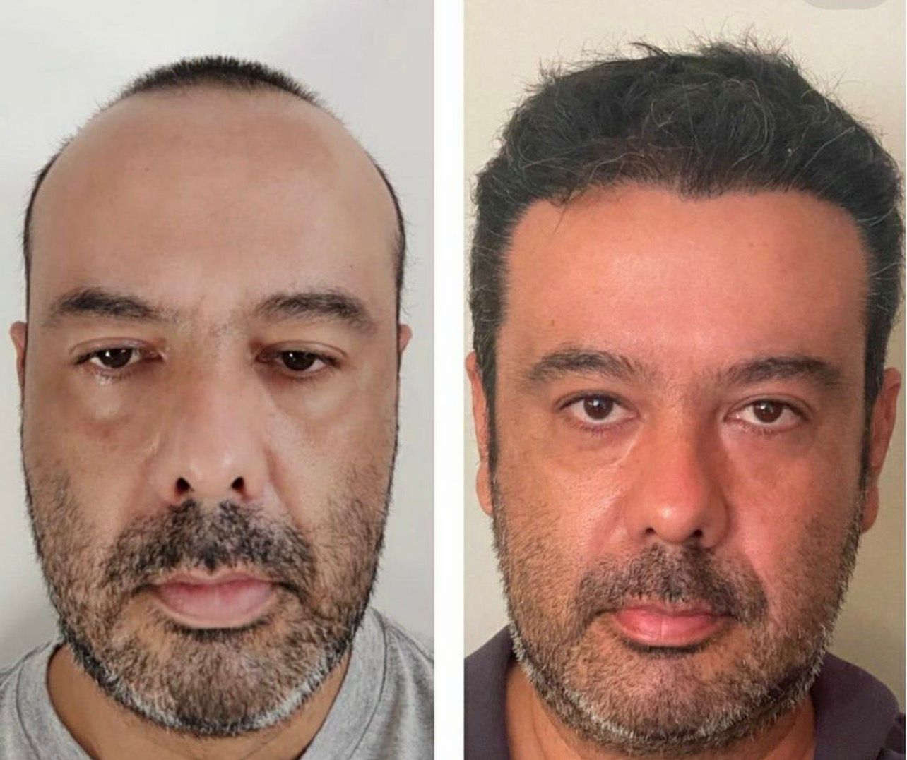
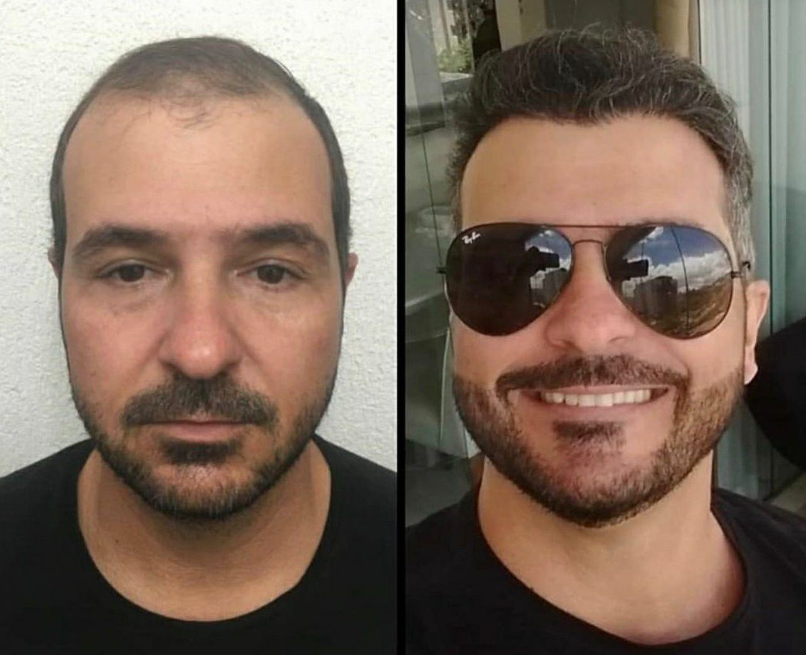
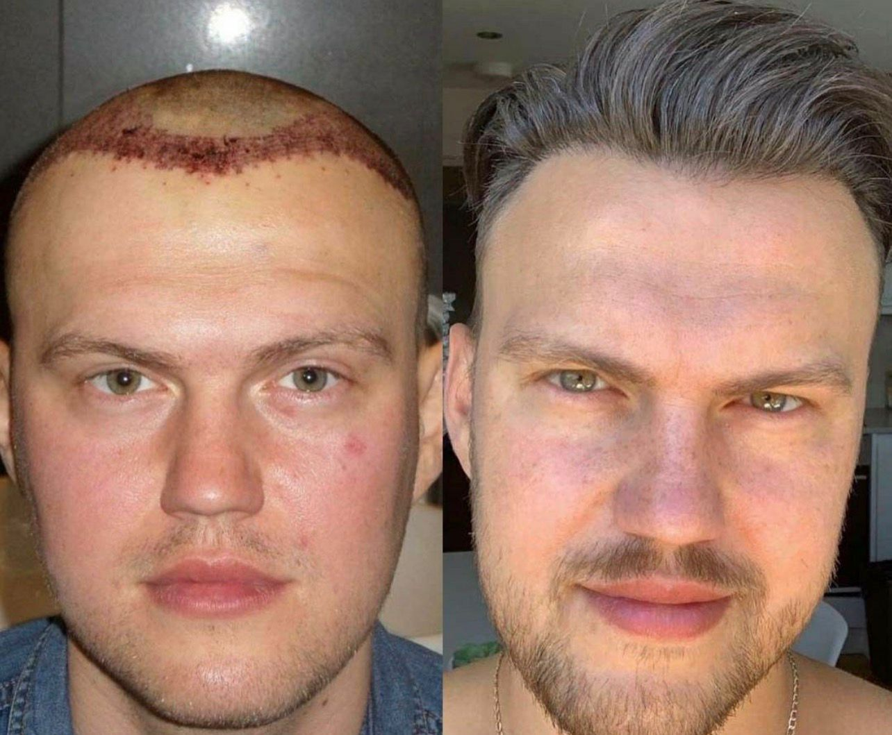
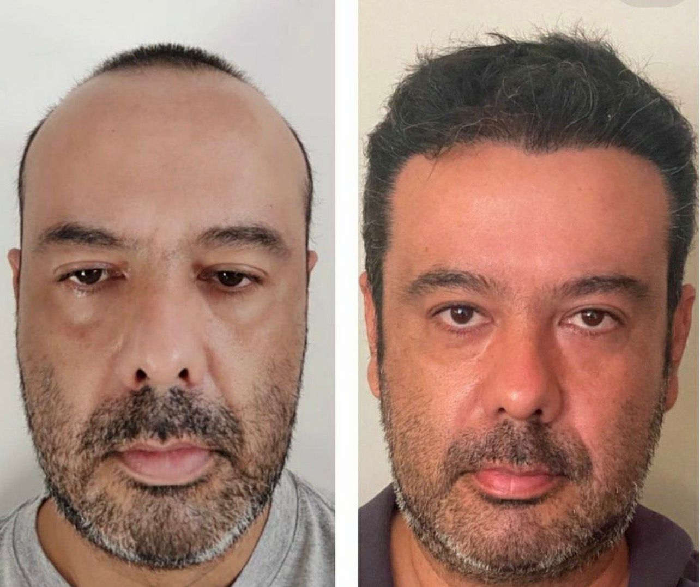
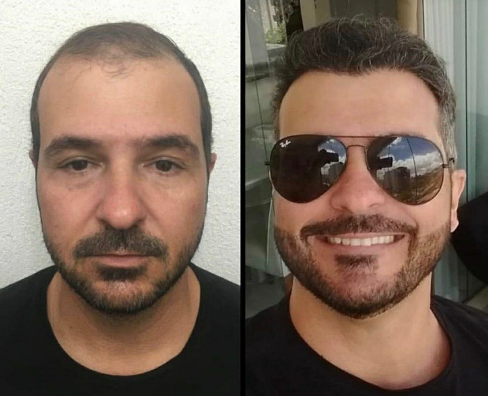
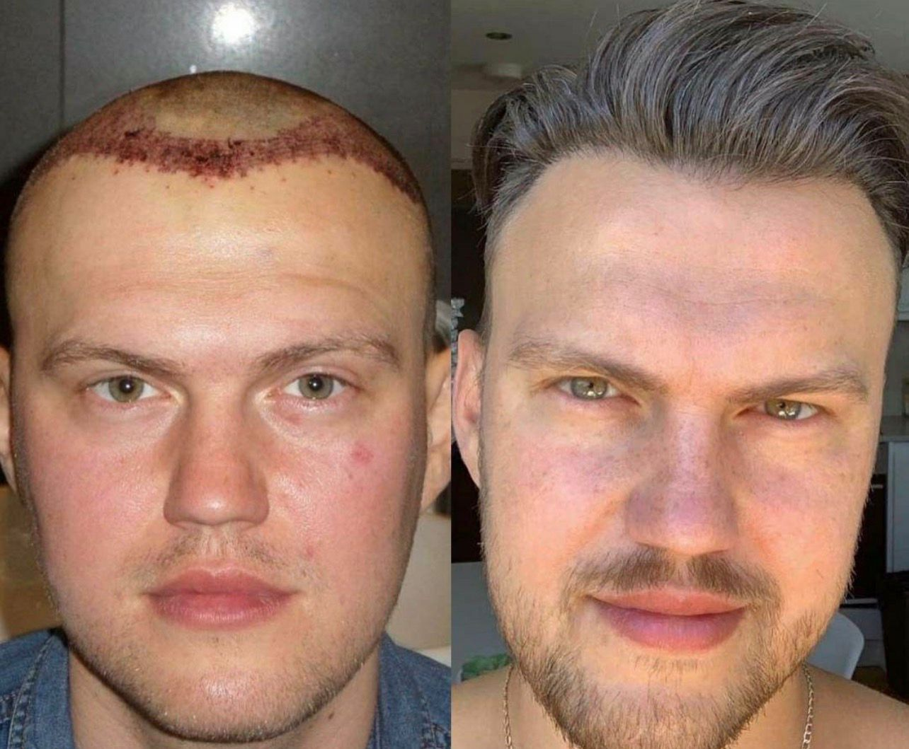
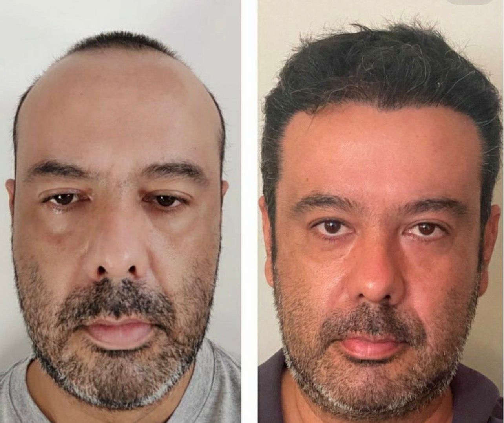
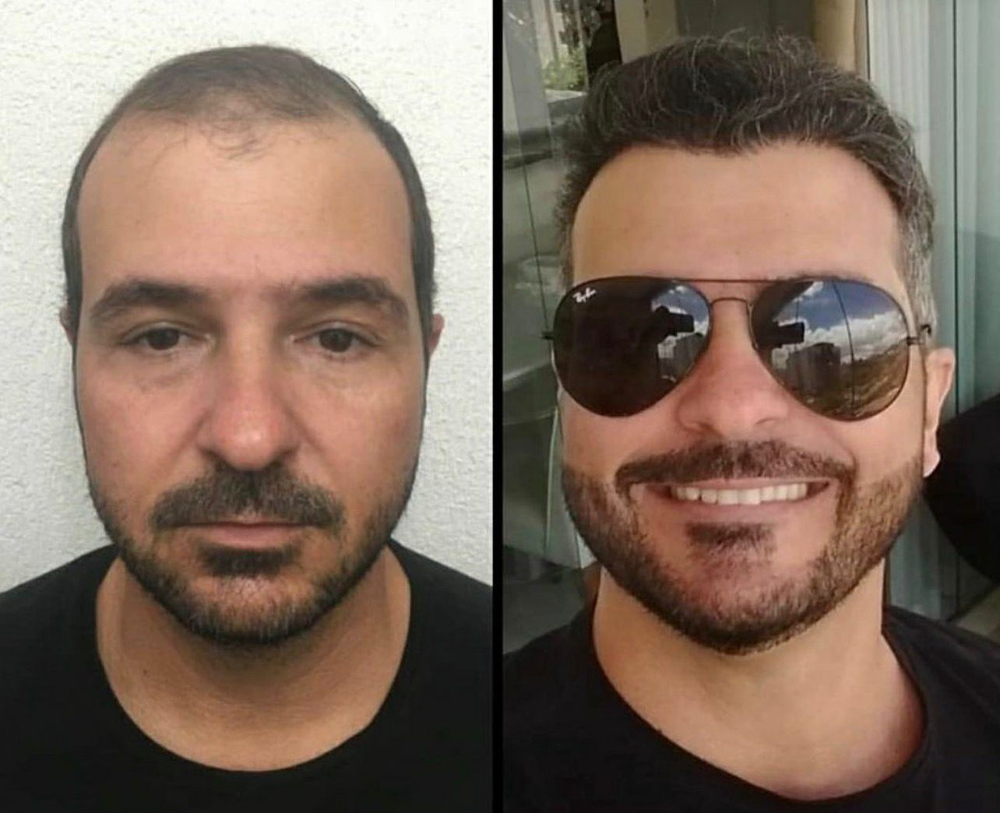
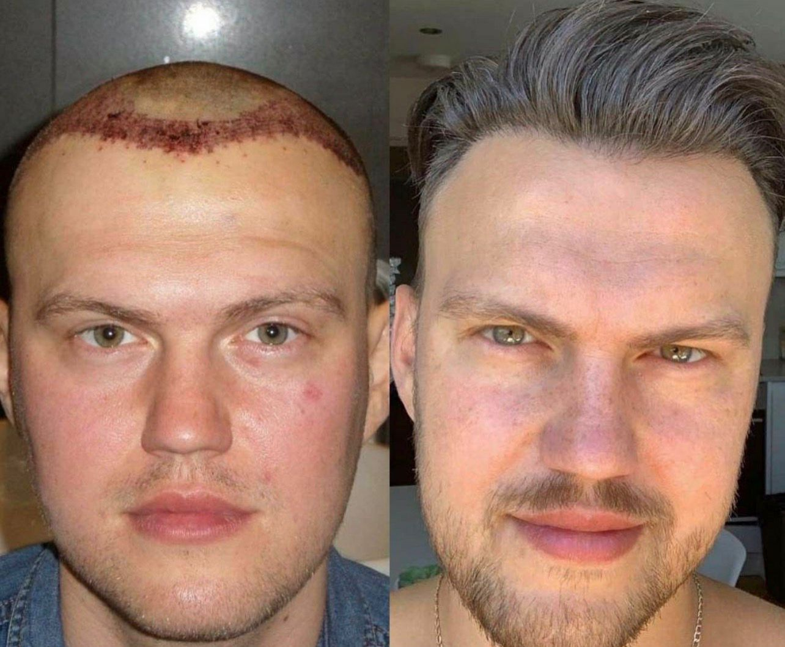

Hayalindeki Saçlara Kavuş
DNR Clinic ile ömür boyu garantili, doğal ve yoğun saçlar.



DNR Clinic ile ömür boyu garantili, doğal ve yoğun saçlar.
Uzmanlarımızla yüz yüze veya online ücretsiz analiz.
Maksimum greft sayısı ile ağrısız ekim işlemi.
Ertesi gün kontrol ve ömür boyu destek.
Yüzlerce mutlu hasta, binlerce doğal sonuç.
Kaydırmak için sürükleyin
Medikal şapkayı 10 gün kullanmalısınız. Sonrasında normal şapka takabilirsiniz.
Hafif yürüyüş 3 gün, ağır spor 1 ay sonra.
1 ay boyunca her gün losyon ve şampuan ile yıkanmalı.
Operasyondan sonraki 2. gün ilk yıkamada çıkarılır.
En az 1 ay kullanmanız önerilir.
Kabuklar dökülene kadar (yaklaşık 15 gün) nemlendirme için kullanılmalıdır.
Saç ekimi, saç dökülmesi yaşanan bölgelere sağlıklı saç köklerinin nakledilmesiyle yapılan kalıcı bir tedavi yöntemidir. Bu işlem genellikle ense veya kulak arkası gibi dökülmeye dirençli bölgelerden alınan greftlerle gerçekleştirilir. FUE ve DHI gibi gelişmiş teknikler sayesinde işlem iz bırakmadan, doğal ve estetik sonuçlar sunar.
Saç ekimi hem erkeklerde hem kadınlarda uygulanabilir ve kişinin saç yoğunluğunu kalıcı olarak artırır. Lokal anestezi altında yapılan işlem sonrası iyileşme süreci genellikle hızlıdır.
Temel olarak, saç ekimi saç köklerinin donör bölgeden alınıp saçsız bölgelere nakledilmesiyle gerçekleştirilir. Aşamalar şu şekildedir:
Genellikle 22 yaş üzerindeki, donör bölgesi yeterli olan bireyler için uygundur. İdeal adaylar: